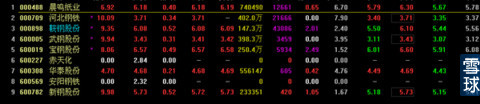
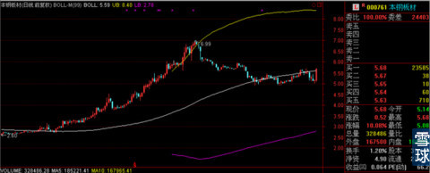
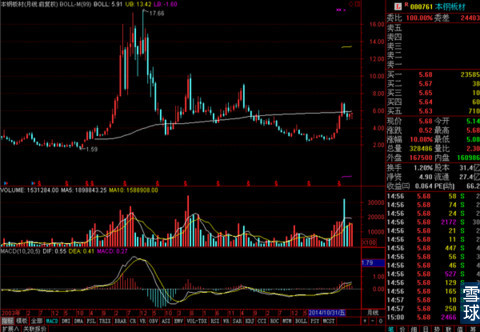
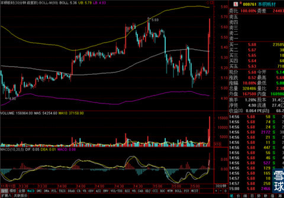
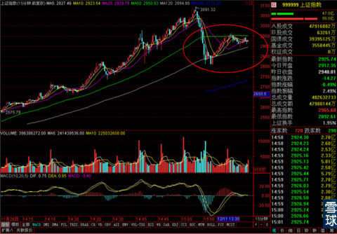
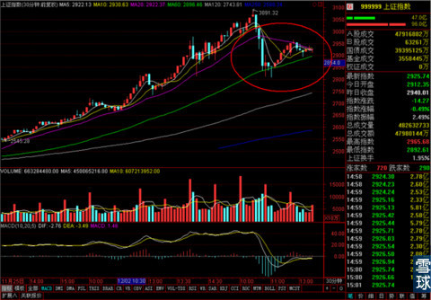

今天收盘之后打开交易软件看了一下，发现破净资产的股票已经寥寥无几了。

当然这个名单不全，有几个之前短暂修复了净值水平，但是因为调整又回掉到净资产水平之下的股票被调了出去，但是暂时还没有调整回来。比如说交通银行，南山铝业等等。但是这个名单在8月份是上百家公司，11月初还有好几十。我最早是专栏和答案里说到这些公司的时候，很多人都说我，你懂不懂财务？你知不知道什么是估值？破净的股票必然有破净的道理！我想说财务和估值我都学过一点点，不敢说懂。但是我懂得另外一个道理，就是中国股市大面积破净又修复不是一次两次，强周期行业身受经济困局影响不代表他们会彻底被淘汰而离开市场。我只知道经济周期和行业周期又波谷就会有波峰。所以我愿意去等，所以我的雪球持仓组合的说明就选择了——顺应牛市，关注强周期。
所以无论大家在这轮行情中赚的多与少，记住这件事很关键。牛熊交替对于股市就像四季更迭对于地球。无非寒冬漫长一些或者盛夏过度炎热，但该来的一定会来。
强周期行业的股票，只要是行业龙头，像宝钢或者鞍钢对于钢铁行业那样，那他就不会因为一轮行业周期就被淘汰出市场，除非市场中出现了比钢材还廉价，结实，耐用的新材料。那么熊市中和行业寒冬的低估值对于投资者就是最好的机会。一个受困于行业谷底而惨遭低估值的股票不可怕，因为这样的低估值是有根源的。市场不会平白无故送低价筹码给大家，只要低价筹码本身没有致命伤，我们可以等着看他的好起来的过程而随之获利。
而对于，行业周期在上升期，业绩数据也不错，各方面指标都极为完美，但是就是股价出奇的低的股票，我才会敬而远之。因为我严重怀疑它是有什么我没发现的暗伤才会这样被低估值。
所以对于股票，想要充分的获利空间就可以在熊市中精心选择那些十全九美的品种，十全十美又低价的，不是故事里的东西就是骗子口中的东西。
说到钢铁行业就不能不说到昨天提到的本钢板材，我拿他举例说明市场主力如何逆着大盘上涨期制造差异感来洗盘，很多小伙伴说那是不是买点，我看到的基本都回复说暂时不要动，但是今天涨停了。这个是怎么一回事。咱们还是边看图边说。

日线上板材调整到中轨之下以后一直没能有效突破并站稳中轨。

月线上也是一样，中轨可能会在未来的走势起到压制并考验的作用。

30分钟线上的走势，在拔地而起之前，基础打得也不是那么牢。所以今天不是强势封涨停，而是尾盘悄悄启动封到涨停价上的。
所以对于纯短线来说是一个机会，但是对于中长线来说，最好的建仓时机要等等月线和日线调整结束，充分站稳关键压力——支撑线。
所以说暂时还不需要太着急去建仓。
最后说一下大盘，

15分钟线上呈现在MA60和MA120之间的三角形整理。

30分钟线上的走势也很类似，也是个三角形整理。
虽然下方支撑线往上走，同时下方的支撑线数值也比较大，但是难以断言不会向下突破，进一步深幅度调整。同时最近证监会要求对两融账户的杠杆率各券商要做好自查工作，所以谨慎一点比较好。
 |
今天收盘之后打开交易软件看了一下SaiLv 2014-12-11 16:55:33 |
Copyright © 1996-2014 SINA Corporation All Rights Reserved.